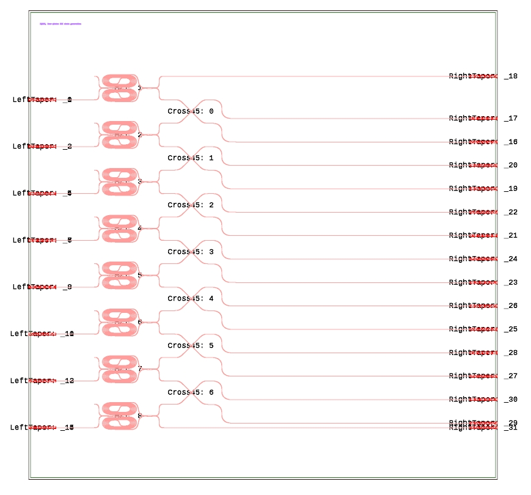

构建 芯片
具备不同功能的器件, 相互连接构成片上系统. 这一部分结合如下图例子, 讲解基于该器件库的芯片版图绘制.
{kind=link}

图中集成光路由若干MZ干涉仪和波导交叉构成. 器件构建仅需放置MZI, 通过调用方法引线, 自动放置和连接波导交叉, 并调用生成芯片 taper 的方法, 即可完芯片版图的绘制.
我们首先给出图中芯片生成的代码
# initialize devices
MZI_22 = MZI22("MZI")
mzi_n = MZI_22.generate_cell().name
HeaterBox(MZI_22)
cross = Cross45("Cross45")
cross45 = cross.generate_cell().name
# generate circuit
chip = ChipLayout()
chip.chipName = "IQASZ, four-photon GHZ state generation"
chip.add_text()
i = 1
port_mzi = []
mzi_list = []
for xx in range(1550, -2100, -500):
mzi22 = chip.add_reference_by_port(mzi_n, 'i1', id=str(i), origin=[-1800, xx], x_reflection=False, rotation=0, heater=True)
chip.add_chip_port(mzi22, 'i1')
chip.add_chip_port(mzi22, 'i1')
chip.add_taper_to_port(mzi22, 'o1', width=cross.w2, L=20)
chip.add_taper_to_port(mzi22, 'o2', width=cross.w2, L=20)
# port_mzi.append(chip.ref_dict[mzi22].ports['o2'].xy)
port_mzi.append(chip.ref_dict[mzi22].ports['o1'].xy)
mzi_list.append(mzi22)
i += 1
for i in range(0, len(port_mzi)-1):
crs = chip.add_reference_by_port(cross45, 'i2', id=str(i), origin=port_mzi[i]+np.array([100, 0]))
chip.direct_connect(mzi_list[i], 'o1', crs, 'i2')
chip.direct_connect(mzi_list[i+1], 'o2', crs, 'i1')
chip.mod_ref_port(crs, 'o1', [[150, -100, -np.pi/2, 0], [150, -100, 0, 0]])
chip.mod_ref_port(crs, 'o2', [[150, -100, -np.pi/2, 0], [150, -100, 0, 0]])
chip.add_chip_port(crs, 'o1')
chip.add_chip_port(crs, 'o2')
if i == 0:
cr_width = chip.ref_dict[crs].ports['o1'].xy[0] - chip.ref_dict[crs].ports['i1'].xy[0]
chip.mod_ref_port(mzi_list[i], 'o2', [[cr_width, 0, 0, 0]])
chip.add_chip_port(mzi_list[i], 'o2')
i = len(port_mzi) - 1
chip.mod_ref_port(mzi_list[i], 'o1', [[cr_width, 0, 0, 0]])
chip.add_chip_port(mzi_list[i], 'o1')
chip.add_box()
chip.draw_tapers()
chip.write_gds()
# below is for heater generation
dict_heat_xy = chip.heater_list
dict_obj = HeaterBox.heater_dict
np.savez("heater_info.npz", heat_xy=dict_heat_xy, obj_info=dict_obj)
上述代码主要分为三个部分: 器件初始化; 芯片构建; heater 信息导出 (如无需 heater 可跳过). 以下将分三个部分说明.
器件初始化
# initialize devices
MZI_22 = MZI22("MZI")
mzi_n = MZI_22.generate_cell().name
HeaterBox(MZI_22)
cross = Cross45("Cross45")
cross45 = cross.generate_cell().name
以上代码段初始化器件. 具体代码与构建 Device 时的子器件初始化类似, 需要注意的是, 器件的自动生成名称需要用变量保存, 后续放置时用于标识器件. 如器件需要添加 heater, 则需要通过 HeaterBox 注册器件的 heater 信息.
Note
需要注意, 器件初始化时, 器件的自定义名称较为重要, 自定义名称指初始化对象时给如的参数, 例如 Cross45(“Cross45”), 此器件自定义名称便为 Cross45. 此名称在放置该器件时, 会连同器件 id 共同构成标识符, 以 Label 的形式显示于 GDS 版图上. 后续生成 heater 时, GDS 版图上显示的器件 Label 作为器件的唯一标识符, 用于 heater 的绘制.
芯片构建
这一部分是芯片构建的最关键部分.
chip = ChipLayout()
chip.chipName = "IQASZ, four-photon GHZ state generation"
chip.add_text()
首先通过如上代码创建芯片对象, 属性 chipName 为添加至芯片左上角的芯片标签, 通过不加参数的 add_text() 方法放置芯片名称.
事实上, 通过调用 add_text() 方法, 可以为芯片添加任何文字, 放置于任何位置, 详情见API Reference.
i = 1
port_mzi = []
mzi_list = []
for xx in range(1550, -2100, -500):
mzi22 = chip.add_reference_by_port(mzi_n, 'i1', id=str(i), origin=[-1800, xx], x_reflection=False, rotation=0, heater=True)
chip.add_chip_port(mzi22, 'i1')
chip.add_chip_port(mzi22, 'i2')
chip.add_taper_to_port(mzi22, 'o1', width=cross.w2, L=20)
chip.add_taper_to_port(mzi22, 'o2', width=cross.w2, L=20)
# port_mzi.append(chip.ref_dict[mzi22].ports['o2'].xy)
port_mzi.append(chip.ref_dict[mzi22].ports['o1'].xy)
mzi_list.append(mzi22)
i += 1
上述代码段为放置器件的第一部分, 其中包含若干芯片构建方法的调用.
首先是 add_reference_by_port, 此方法通过端口放置器件, 即, 放置此器件使其 X 端口位于特定坐标处.
此方法第一个参数是调用器件的名称 (自动生成的名称), 第二个参数为端口名, 第三个参数 id 为标识符, 建议按照数字顺序给相同器件从 0 开始编号,
第四个参数为坐标.
后三个参数可选, 分别是反射, 旋转以及是否需要添加 heater.
该方法将自动根据端口放置的坐标, 是否镜像以及旋转, 自动计算引用的偏移量, 放置器件引用.
此外, 还会根据放置信息, 自动更新该器件引用的各端口坐标和端口角度.
此方法生成的引用, 会放置于字典 ChipLayout.ref_dict, 键值由程序自动生成, 调用 add_reference_by_port 生成引用时, 索引该引用所需键值会以返回值形式返给用户.
因此, 以上代码段, 通过循环放置的 MZI, 在进入下一轮循环前, 便可通过变量 mzi22 通过引用的字典查询其端口信息.
放置好的 MZI, 其输入端口我们希望其作为芯片端口, 后续通过 taper 与片外光学系统通过光纤耦合, 因此需要将其输入注册为芯片端口.
类 ChipLayout 提供了方法 add_chip_port 完成此功能, 注册后的芯片端口, 调用 draw_tapers() 方法将自动生成 taper.
MZI 的输出口, 我们进一步希望连接至波导交叉, 但 MZI 的输出波导宽度与波导交叉的输入端口宽度不同, 因此需要添加 taper 用于宽度匹配.
类 ChipLayout 提供了方法 add_taper_to_port, 只需给定待添加 taper 的器件引用标识以及端口名, 并给定目标宽度和taper长度, 方法便能够自动生成一段taper, 并更新字典 ChipLayout.ref_dict 中存储的端口信息.
为了更方便地完成下一层器件的连接, 程序创建了两个 list 存储 MZI 的输出端口信息以及索引名称.
至此, 我们完成了第一层 MZI 的放置. 接下来我们放置第二层波导交叉, 借此介绍更多构建芯片的方法. 代码段如下
for i in range(0, len(port_mzi)-1):
crs = chip.add_reference_by_port(cross45, 'i2', id=str(i), origin=port_mzi[i]+np.array([100, 0]))
chip.direct_connect(mzi_list[i], 'o1', crs, 'i2')
chip.direct_connect(mzi_list[i+1], 'o2', crs, 'i1')
chip.mod_ref_port(crs, 'o1', [[150, -100, -np.pi/2, 0], [150, -100, 0, 0]])
chip.mod_ref_port(crs, 'o2', [[150, -100, -np.pi/2, 0], [150, -100, 0, 0]])
chip.add_chip_port(crs, 'o1')
chip.add_chip_port(crs, 'o2')
器件的放置依然以 add_reference_by_port 方法的调用开始. 与此前不同的是, 这里的 origin 参数直接传入了在放置 mzi22 时获取的端口信息.
在此端口基础上, 加入统一的坐标偏移, 完成波导交叉的放置.
直接放置的波导交叉与其它元件并无连接, 因此程序包提供了方法 direct_connect.
调用它即可完成指定 元件:端口 间的连接.
软件包还提供了方法 mod_ref_port 用于更改特定器件的端口, 其第三个参数为所加入线段的 [dx, dy, 末端方向, 末端曲率] 所构成的列表.
最后, 程序调用了 add_chip_port 注册输出端口.
在完成器件的放置, 连接以及端口定义后, 还需加入芯片 Box 以及 taper, 并输出 GDS 文件. 上述功能可通过以下代码实现.
chip.add_box()
chip.draw_tapers()
chip.write_gds()